纯粹的数字游戏
为纯粹主义者准备的问题
照镜子
两个算式的得数相等！这个答案看似出人意料，甚至会让你发出惊呼。但是，如果你一列一列比较计算结果，你就会发现这两个算式的得数的确应该相等。左边算式的第一列有1个9，即1×9，而右边算式第一列有9个1，即9×1。左边算式的第二列有2个8，即2×8，而右边算式第一列有8个2，即8×2。其余各列同样如此，因此两个算式的总和相等。
做高斯第二
如果我们把所有这些数字列出加法竖式，如高斯般的敏锐眼光就会告诉我们算式的每一列（个位、十位、百位和千位这4列）都包含相同的数字，都有6个1、6个2、6个3和6个4，虽然这些数字在各列中出现的先后次序有所不同。我们可以轻松地算出各列数字之和：(6×1) + (6×2) + (6×3) + (6×4) = 6 + 12 + 18 + 24 = 60。因此，这24个数字的和为：
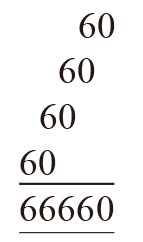
加法表
这道题有两种解法，你可以使用其中任意一种。我把第一种解法称作阿尔昆法（因为这个解法使用的数字配对方式与阿尔昆使用的1~100求和法如出一辙），把第二种解法称作高斯法。
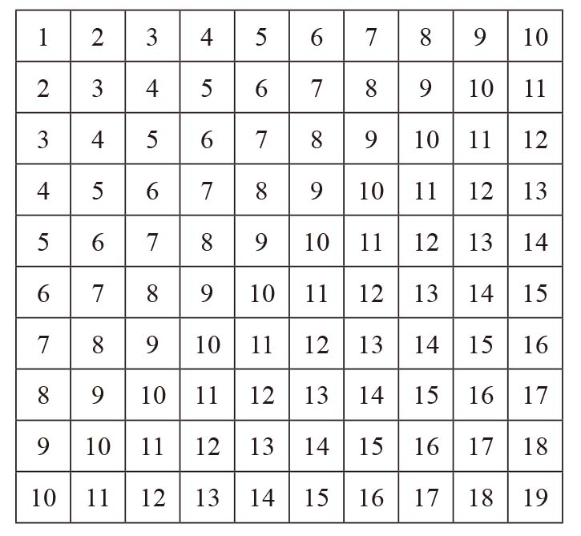
阿尔昆法：由左上角至右下角，将所有数字按对角线方向配成对。你就会得到(1 + 19) = 20，(2 + 18) = 20，(3 + 17) = 20……一直到 (9 + 11) = 20，其中第一个数字组合有1组，第二个组合有2组，第三个组合有3组，以此类推。因此，所有组合的和为20 + (2×20) + (3×20) + … + (9×20)，即 (1 + 2 + 3 + … +9)×20 = 45×20 = 900。但是，对角线上的10个10还没有统计进来。因此，所有数的和为900 + 100 = 1 000。
高斯法：第一行各数之和为(1 + 10) + (2 + 9) + … + (5 + 6) = 5×11 = 55，第二行的各个数字分别比第一行的对应数字大1，因此第二行各数之和等于第一行各数之和加10。同理，第三行各数之和等于第二行各数之和加10，即第一行各数之和加20。因此，表中所有数字之和为：
55 + (55 + 10) + (55 + 20) + … + (55 + 90)
整理后为：
(10×55) + (10 + 20 + 30 + … + 90)
=
550 + 10×(1 + 2 + 3 + … + 9) = 550 + (10×45) = 550 + 450 = 1 000
整整齐齐的9个数
某些数字肯定不能填到某些位置，例如1不能出现在乘法运算中，因为一个数乘以1仍等于这个数，而每个数字只能出现一次。但是，要做出这道题，除了试错法，真的别无他法。答案就是：
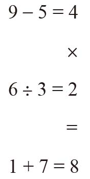
魔鬼等式
27×3 = 81
6×9 = 54
套在圆圈里的数
和为11：
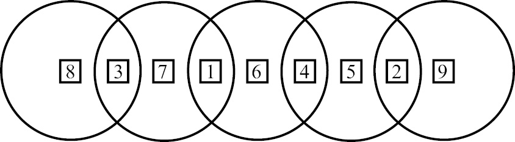
和为13：
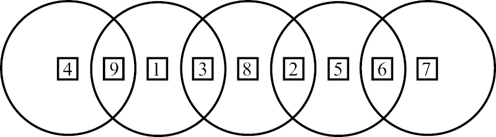
和为14：
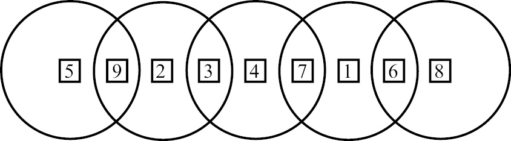
4个4
除了下面给出的解法以外，很多数还可以通过不同的算式得到。
2~9的算法：
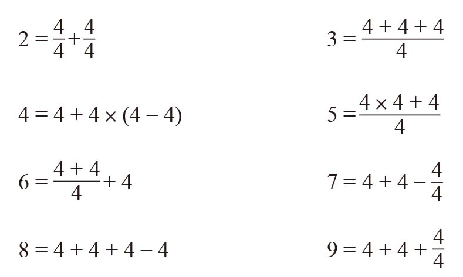
10~20的算法：
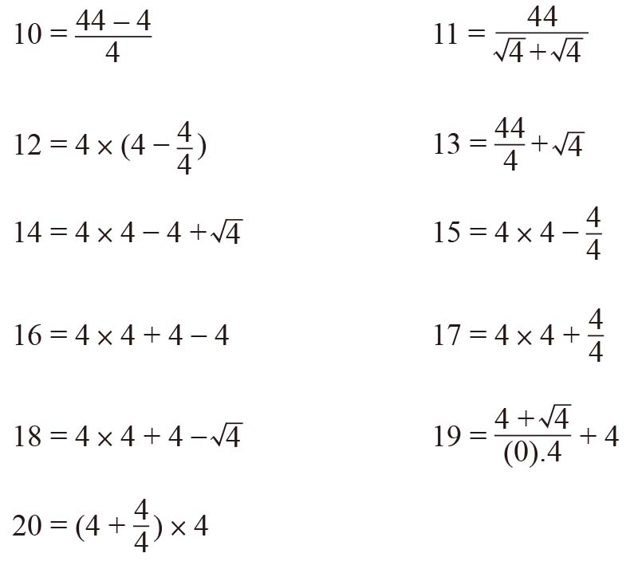
21~30的算法：
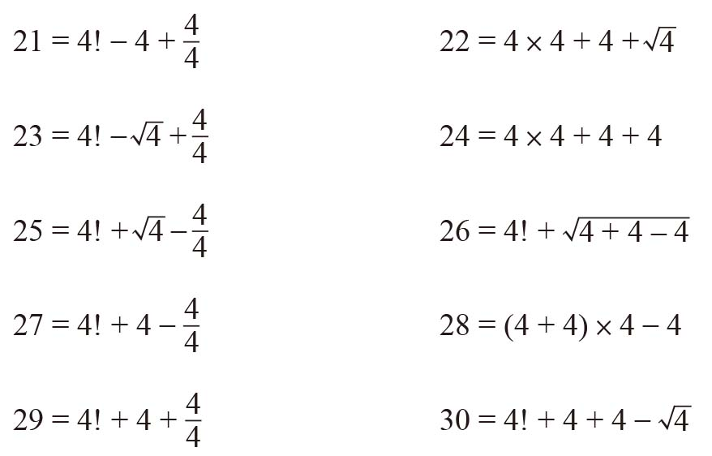
31~40的算法：
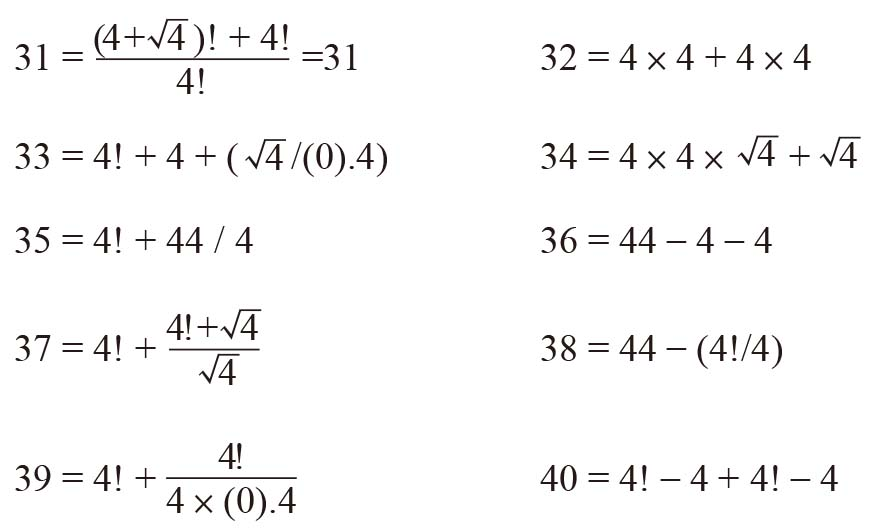
41~50的算法：
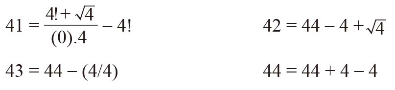
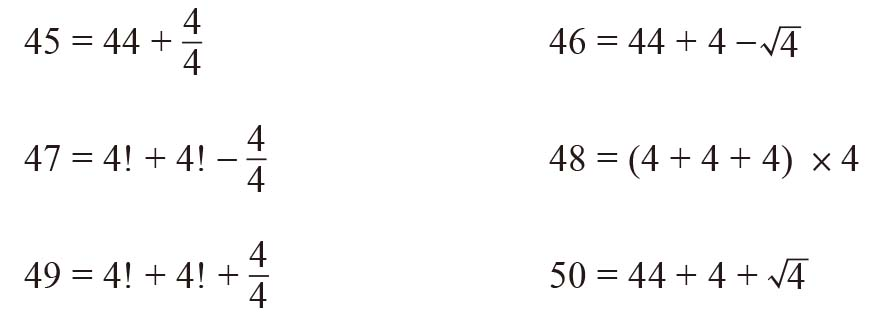
（以上答案引自mathforum.org，在此表示感谢。）
我们的哥伦布问题
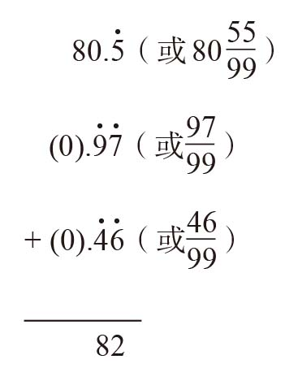
因为
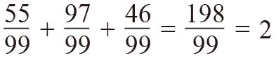
，所以上式中的分数相加正好可以得到整数结果。3和8
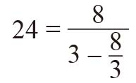
小孩子的把戏
如果有人认为孩子们做某道题的速度快于成年人，这就说明这道题可能对理解能力要求不高，只需通过观察找出简单的规律即可。看到一系列数字，成年人立刻就会想到数值。但是，本题中的数字没有任何数值意义，仅代表形状。数一数每个四位数中有多少个圈，等号右边的数字就是统计结果。符号8有2个圈，0有1个圈，9有1个圈，因此数字8 809有6个圈。同理，2 581中圈的个数是2。
跟着箭头走（1）
希望你没有想得过于复杂，规则其实非常简单。看到每个数字后，将两个数位上的数字相乘即可：
7×7 = 49 4×9 = 36 3×6 = 18
因此，下一个数字是1×8 = 8。
跟着箭头走（2）
规则是求每个数中的两个数字的平方和。因此：
02 + 42 = 16，12 + 62 = 37，32 + 72 = 58
根据这个规则，缺失的数应该是20，因为：
42 + 22 = 20，22 + 02 = 4
在做这道题时，我盯着4→16看了好长时间才意识到必须运用求平方这个方法。接下来，我考虑如何通过平方由16得到37，就豁然开朗了。
跟着箭头走（3）
如果你是第一次见到这道题，肯定会觉得它很难，因为所有的算术法则似乎都不适用。
但是，如果你轻轻地读出这些数字，就会发现表示这些数字的英文单词越来越长：
ten（10）
nine（9）
sixty（60）
ninety（90）
seventy（70）
sixty-six（66）
把它们写到纸上，就能清楚地看出其中的规律。第一个数字有3个字母，第二个有4个字母，第三个有5个字母，其余的数字分别有6个、7个和8个字母。这些数字按照单词的长度排列，每一项都比前一项多一个字母。
因此，下一项应该包含9个字母。但是，包含9个字母的数字有很多！例如，forty-four（44）、fifty-five（55）、sixth-nine（69）、ninety-six（96）都含有9个字母。应该填哪一个呢？
我们继续考察列出的这些数字。
含有3个字母的数词只有one（1）、two（2）、six（6）和ten（10）。
含有4个字母的数词只有four（4）、five（5）和nine（9）。
数列中的每个数都是由同样数量的字母构成的数字中最大的一个，我们可以利用其他数字来验证这条规则。
由9个字母构成的最大数是ninety-six（96），因此答案是ninety-six（96）。
但是，不要着急，以下这个数字：
10 000 000 000 000 000 000 000 000 000 000 000 000 000 000 000 000 000 000 000 000 000 000 000 000 000 000 000 000 000 000 000 000 000，即10100，可以写成“googol”（古戈尔）。古戈尔含有6个字母。在这个数后面加一个0，就会变成10古戈尔（ten googol），正好有9个字母。因此，它才是最佳答案。
据说，谷歌（Google）在以前的面试中经常使用这道题，可能就是基于以上的原因吧。
字典难题
这部字典收录了1 000的五次方个数字。所有数字的开头肯定是“one”（1）、“two”（2）、“three”（3）、“four”（4）、“five”（5）、“six”（6）、“seven”（7）、“eight”（8）、“nine”（9）、“ten”（10）、“eleven”（11）、“twelve”（12）、“thirteen”（13）、“fourteen”（14）、“fifteen”（15）、“sixteen”（16）、“seventeen”（17）、“eighteen”（18）、“nineteen”（19）、“twenty”（20）、“thirty”（30）、“forty”（40）、“fifty”（50）、“sixty”（60）、“seventy”（70）、“eighty”（80）或者“ninety”（90）。
因此，第一个条目肯定是8。
同理，最后一个条目的开头肯定是2，因为上述单词按照字母顺序排列时，“two”应该排在最后。不过，本题的答案不是2，因为以“two”开头的数词（除了2本身以外）在字典中都排在“two”的后面。2之后的第二个单词可以是“trillion”（万亿）、“billion”（十亿）、“million”（百万）、“thousand”（千）或者“hundred”（百），其中“trillion”按照字母顺序排在最后，因此最后这个数字的前两个单词是“two trillion”。这个数的第三个单词肯定还是“two”。后面依次是“thousand”“two”“hundred”“two”。也就是说，答案是2 000 000 002 202。
第一个奇数的开头肯定是8，但8显然不是我们要找的答案，因为8是偶数。在可用的第二个单词（包含“trillion”、“billion”、“million”、“thousand”和“hundred”这5个单词）中，按字母顺序排在最前面的是“billion”。随后的5个字母肯定是“eight”，可选的表达有“eighteen”（18）、“eighty”（80）、“eight million”（800万）、“eight thousand”（8 000）和“eight hundred”（800）。最终，“eighteen”胜出。按照同样的方法，继续往下推理。后面的表达依次为：million、eighteen、thousand、eight、hundred和eighty。至此，我们知道这个数字应该是8 018 018 88X，其中X表示最后一位数。因为这个数是奇数，所以X只能是“one”、“three”、“five”、“seven”和“nine”中的一个。最终，five胜出。
因此，答案是8 018 018 885。
按照上述方法，可以推断出排在最后的奇数是2 000 000 002 203。附送的问题：SEND MORE MONEY（再送一点儿钱）
我们已经取得的进展是：
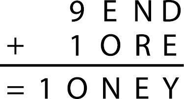
如果千位上有进位数，那么1 + 9 + 1 = 1O（其中，O是大写英文字母），说明O = 1。但这是不可能的，因为M = 1。由此可见，千位上没有进位数。因此，O = 0。这一步很关键，因为0与字母O形状相似，容易让我们分心！
不过，百位上肯定有进位数，否则E + 0 = N，就会导致E = N，这是不允许的，因为两个字母必须代表不同的数字。至此，原算式变成了下面这种形式：
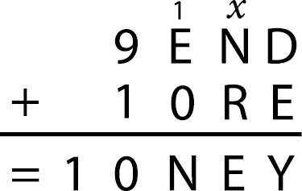
我在十位上的进位数位置写了一个x。如果有进位数，则x = 1，反之，x = 0。我之所以写上x，是因为我们可以根据剩余几列的计算列出下面三个方程：
百位：E + 1 = N
十位：x + N + R = 10 + E（10代表进位数）
个位：D + E = Y + 10x
如果x = 0，那么将第二个方程中的N替换成E + 1后就会得到：
E + 1 + R = 10 + E
化简后可以得到：
R = 9
这个结果是不成立的，因为S = 9。所以，x = 1，同时上述三个方程变为：
E + 1 = N
N + R = 9 + E
D + E = Y + 10
将第二个方程中的N替换成E + 1后就会得到E +1 + R = 9 + E，化简后可得R = 8。
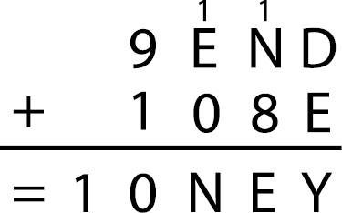
现在，我们还有下面两个方程：
E + 1 = N
D + E = Y + 10
数字0和1已经被占用，因此Y肯定大于或等于2，从而说明D + E > 12。由于9和8已经被占用，所以D和E只能分别是6和7（不分先后）或5和7（不分先后）。
下面可假设这两个数是6和7，即假设E是6或者7。如果E = 6，则D = 7。此时会产生矛盾，因为根据E + 1 = N，N也等于7，而不同字母必须代表不同的数字。我们考虑另一种情况，假设E = 7。根据方程E + 1 = N，可以得出N = 8，但8已经被字母R占用。
因此，D和E为5和7或者7和5。
根据同样的原因可知，E不可能等于7，否则就会产生N = 8这个不可能的结果。因此最后的结果是，D = 7，E = 5，Y = 2，N = 6。
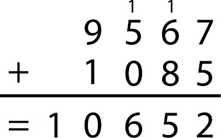
三个女巫
第1步：T只能是1。两个6位数相加，和是一个7位数，那么这个7位数的第一个数位上只能是1。（在这个环节，我们可以忽略第三个4位数，因为它不可能使这个7位数的第一个数位变成大于或等于2的数。由于每个字母都代表不同的数字，所以DOUBLE + DOUBLE + TOIL的值最大为987 543 + 987 543 + 6 824 = 1 981 910。）
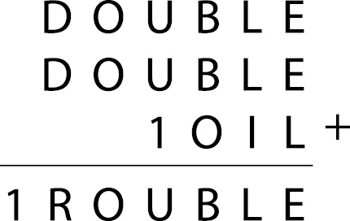
第2步：在解字母算术趣题时，必须时刻注意进位数。每一列都有可能从右边一列进1，同时，每一列还有可能向左边一列进1。
考虑千位上的情况。我们需要计算U + U + 1（可能还要加上从百位上进位的1），而且得数的个位数必须是U。
通过排除法，我们发现，在有进位数时，U只能等于8，因为8 + 8 + 1 + 1 = 18；在没有进位数时，U只能等于9，因为9 + 9 + 1 = 19。无论是哪种情况，都会向万位进1。
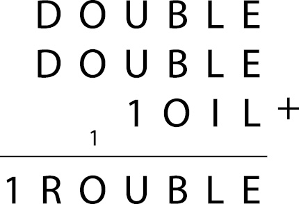
第3步：考虑万位上的情况。我们知道O + O + 1的得数的个位数是O，符合这个条件的数只能是O = 9，还说明万位必须向十万位进1。既然9被O占用，那么U只能等于8。根据上面的计算，千位上也必须有进位数1。
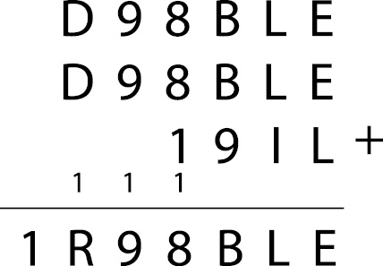
第4步：百位上得数的个位数是B。百位上的算式有两种可能：第一，B + B + 9；第二，有进位数时的算式为B + B + 9 + 1。如果是第一种可能，则B为1；如果是第二种可能，则B为0。因为T是1，所以B只能是0，同时说明这一列有进位数1。
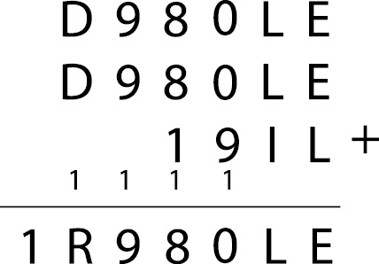
第5步：D肯定大于5。D不能是5，否则就会导致R = 1，而1已经被其他字母占用了。所以D与R的值只能是D = 6且R = 3，或D = 7且R = 5。
同理，我们可以缩小E、L和I的取值范围。
到目前为止，还有6个数字没有确定，分别是2、3、4、5、6和7。
E不可能是2，否则就会导致L = 8，而8已被占用；E也不可能是5，否则就会导致L = 5。
如果E = 3，L = 7，这个组合与D和R的两个可能组合相互矛盾。
如果E = 7，L = 3，也会导致同样的问题。
如果E = 6，L = 4，I = 5，也与D和R的两个可能组合相互矛盾。
只有当E = 4，L = 6，I = 3时，可推断出D = 7且R = 5。至此，问题解决。
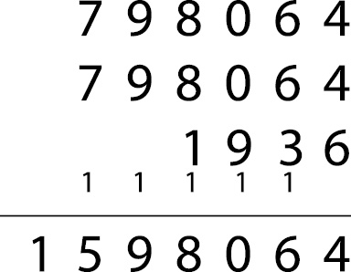
奇数和偶数
在解这道“长”乘法问题时，我们先分头考虑其中的两个“短”乘法：
（1）EEO×O = EOEO
（2）EEO×O = EOO
我们从（2）开始，这个等式表明三位数EEO（乘数）与奇数O（被乘数）的乘积是一个三位数。被乘数不能是1，否则乘数就会与积相等，这与题意相矛盾。乘数的首位是一个偶数，因此它最小是201。由此可见，被乘数不可能大于或等于5，因为201×5的得数1 005是一个4位数，这与题目给出的三位数得数相矛盾。因此，我们可以断定，被乘数是3。既然被乘数是3，那么乘数的首位数只能是2，因为如果首位数大于或等于4，得数同样是一个4位数。至此，我们已经推断出：
（3）2EO×3 = EOO
乘数的十位数是偶数，而乘积的十位数是奇数。偶数乘以3后，得数仍然是一个偶数。因此，要让算式成立，乘数的个位数乘以3时必须进位，而且进位数是奇数。由于1、3与3相乘时没有进位，所以乘数的个位数只能是5、7或9。如果这个个位数是5，相乘时就会进1（5×3 = 15）；如果这个个位数是7或9，相乘时就会进2（7×3 = 21，9×3 = 27）。我们知道进位数是一个奇数，因此乘数的个位数只能是5。
（4）2E5×3 = EOO
乘数的十位数是0、2、4、6或8，但我们可以排除4和6，因为245×3 = 735，265×3 = 795，都与题意不符（因为得数的首位数是偶数）。所以，乘数只能是205、225或285。
推断出这些信息后，我们接着考虑等式（1）。
（1）有下面三种可能：
（a）205×O = EOEO
（b）225×O = EOEO
（c）285×O = EOEO
得数的首位数是偶数，所以它肯定大于2 000。但是，如果被乘数是1、3、5或7，则（a）、（b）、（c）的得数都小于2 000。由此可见，被乘数肯定是9。既然被乘数是9，那么满足条件的等式只能是（c），因为（a）的得数小于2 000，（b）的得数是2 025，这与得数的第二位数必须是奇数的条件相矛盾，所以：
（1）285×9 = 2 565
现在，我们可以写出完整的算式了：
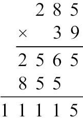
自带提示信息的填字游戏
在做题之前，我们先做一下准备工作，列出各个数词对应英文的长度：
3个字母：one（1）、two（2）、six（6）、ten（10）
4个字母：four（4）、five（5）、nine（9）
5个字母：three（3）、seven（7）、eight（8）
6个字母：eleven（11）、twelve（12）、twenty（20）
7个字母：fifteen（15）、sixteen（16）
8个字母：thirteen（13）、fourteen（14）、eighteen（18）、nineteen（19）
第1步：我在正文部分已经说过，纵8肯定是“ONE *”的形式，因为前面的数字大于1时，条目中就必须包含表示复数的s，这样一来，条目的长度就至少是6格。横10占6格，因此它也肯定包含一个大于1的数字，且这个数字包含纵8末尾的那个字母“*”。可用数字有one、two、six和ten。但是，one、two及ten将导致纵8变成“ONE E”、“ONE O”或“ONE N”，这三个结果都不符合题意！通过排除法，可以断定纵8是“ONE X”，横10是表示字母#个数的“SIX #s”。（#等符号分别表示某一个字母。下同。）
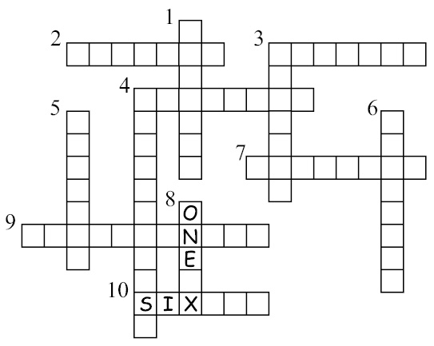
第2步：纵4含有一个8个字母长度的数词，所以该条目应该是THIRTEEN、FOURTEEN、EIGHTEEN或NINETEEN Ss。我们可以排除FOURTEEN和NINETEEN，因为横4需要一个包含5个字母的数词，而在以F或N开头的数词中，没有任何单词是由5个字母构成的。我们知道在一共12个条目中，只有一个条目中的字母是单数形式（即纵8）。其余11个条目末尾一共有11个S。另外，横10中的SIX还有一个S，使S的总数变成了12个。除非其他条目中包含有SIX、SEVEN、SIXTEEN或SEVENTEEN，否则S的数量就不会再增加了。但是，由于其他条目都不包含3个字母、7个字母和9个字母的单词，所以我们可以排除SIX、SIXTEEN和SEVENTEEN。由此可见，多出来的S肯定来自SEVEN这个单词。只有3个条目有可能包含SEVEN，也就是说，S最多有15个。所以，我们把EIGHTEEN从纵4的备选答案中排除。于是，纵4只能是“THIRTEEN Ss”，横4只能是“THREE ?s”，纵1只能是“FOUR @s”。
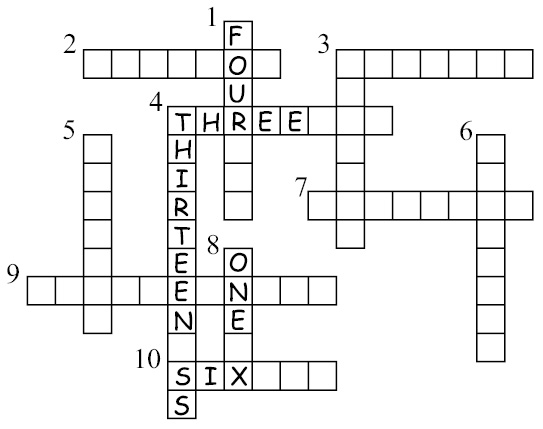
第3步：如果一共有13个S，而我们已经确定了12个，那么根据我们之前的计算，应该还有一个条目包含“SEVEN”。可以容纳“SEVEN”的条目正好只有2个，即纵6和横7。如果是横7，纵3这个条目表示的就是字母E的个数，整个条目应该是FOUR、FIVE或NINE Es。此时，整个表格里已经有7个E（包括这个“SEVEN”中包含的E）了，所以可以排除FOUR和FIVE。我们还可以把NINE也排除掉，因为纵3填入NINE，就会把横4变成THREE Ns，但是表格里已经有4个N了（分别来自NINE、THIRTEEN和SEVEN）。因此，纵6只能是“SEVEN !s”。
这就意味着横7要么是THREE，要么是EIGHT。到目前为止，我们已经使用了12个字母，即E、F、H、I、N、O、R、S、T、U、V和X。由于我们知道表格里一共只包含12个字母，所以我们可以排除EIGHT，因为EIGHT含有字母G。也就是说，横7是“THREE Vs”。
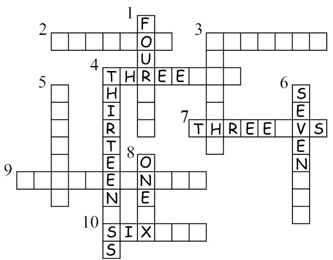
第4步：纵3只能是“FOUR Hs”，因为填入FIVE的话，横4就变成了“THREE Vs”，这与横7一模一样，不符合12个条目只包含12个不同字母的条件。在剩下的这些字母中，E出现的次数最多，因此横9肯定是“THIRTEEN Es”。横9不可能包含FOURTEEN，否则纵5表示的就是字母U的个数，而U的个数已由横4表示了。横9也不可能包含EIGHTEEN（含有字母G）或NINETEEN，因为剩下的空格不可能补足19个E。剩下的3个数词都只含有4个字母。既然表格中一共有THREE Vs（3个V），但目前只出现了1个V，所以剩下的两个V都必须来自FIVE。由于一共有THREE Us（3个U），表格里现在有两个U，所以还需要一个FOUR来提供剩余的U。也就是说，一共有4个O，因此横2只能是“FOUR Os”，纵5只能是“FIVE Is”，横3只能是“FIVE Fs”，横10只能是“SIX Ts”。纵1与纵6剩下的空格只能是N和R。
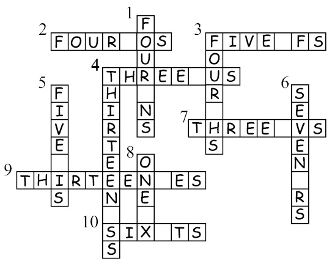
十位数中的自传数
对于这道题，我准备从明显不正确的答案开始，通过系统分析，逐步锁定目标。我们的任务是在第二行填入自传数，使填入的每个数都与它上方的阿拉伯数字在第二行中出现的次数一致。
先假设填入的第一个数是9。
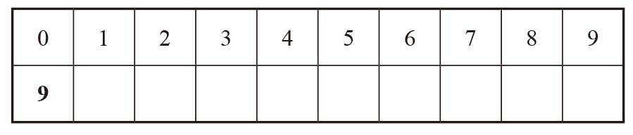
如果填入的第一个数是9，则说明这个自传数包含9个0。在这种情况下，后面填入的其他数就只能都是0。但是，我们知道这个自传数至少包含1个9，因此后面填入的数字不可能都是0。
再假设填入的第一个数是8。
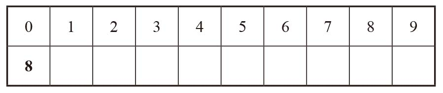
这就意味着在剩余的9个空格里有8个0。由于至少有1个8，所以在第一行的8下面肯定是一个除了0以外的数字（记作x），而其他空格里的数都只能是0。
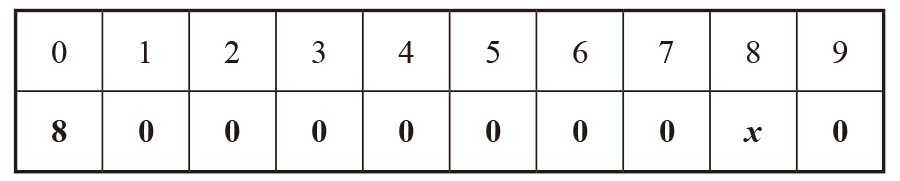
但是，x无法取值！x不能是1，因为第二行第二格中的数字是0，它表示的是这个自传数中包含的1的个数。同理，x取任何值都会导致矛盾。
在进一步分析之前，我们可以做一些推理，看看第二行中的数字有哪些特点。这些数字之和等于10，因为每个数都表示某个阿拉伯数字在这一行中出现的次数。第二行一共有10个空格，因此所有数字的和肯定等于10。
接下来，我们假设填入的第一个数字是7。
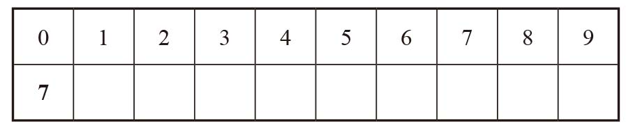
我们知道一共要填写7个0。由于这个自传数含有7，所以我们可以断定，在第一行的数字7下方填入的肯定是一个除0之外的数字，而且是1、2、3中的一个。（如果这个数大于3，所填数字的总和就会大于10。）但是，无论这个数字是几，都会导致无解。假设在7下方填入的数字是1，那么在1的下方只能填一个除0之外的数字。这个数字不能是1，否则自传数中就会有两个1。这个数也不能是2，否则2下方的数就将是一个除0之外的数字，与共有7个0的条件相矛盾。利用同样的方法，我们可以推断出7下面不能填入2或3。
接下来，填入6。
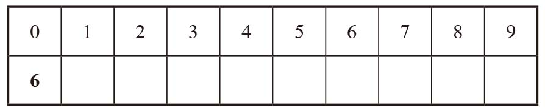
一共有6个0。6的下方是一个除0之外的数字，假设是1。
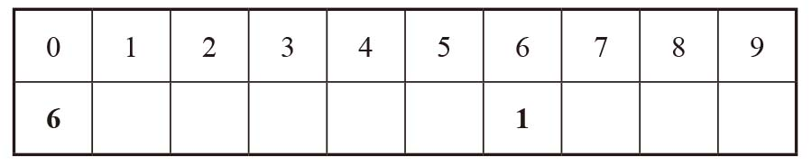
这就意味着1下方是一个除0之外的数字。由于第二行中的各个数字之和一定等于10，所以1下方的数只能是1、2或3。首先，我们可以排除1，因为在1的下方填入1后，第二行中就有两个1，与题意不符。如果填入的是2，那么2下方的数只能是1，只有这样各个数字之和才能等于10。胜利的曙光就在眼前！现在还有6个空格，只能全部填入0。至此，问题得以解决。
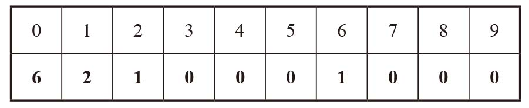
泛迪吉多数引发的混乱
10个阿拉伯数字的组合一共有10×9×8×7×6×5×4× 3×2×1 = 3 628 800种。只要0不出现在首位，这些组合就都是泛迪吉多数（所有泛迪吉多数的首位都不是0）。当0排在首位时，这10个阿拉伯数字的组合可被视为9位数，共有9×8×7×6×5×4×3×2×1 = 362 880种可能的组合。所以，10位数的泛迪吉多数共有3 628 800 – 362 880 = 3 265 920个。
泛迪吉多数与泛整除性
我们将逐个确定这10个阿拉伯数字的位置。我们先从最简单的入手。任何可以被10整除的数，末位数都是0，因此 j = 0。可以被5整除，说明末位数是0或5，因此e = 5。
确定这两个数字之后，泛迪吉多数就变成了下面这种形式：
a bcd 5fg h i0
一个数可以被一个偶数整除，说明这个数也是一个偶数，因此b、d、f、h都是偶数。也就是说，b、d、f、h是2、4、6、8的某种组合，剩下的几个未知数，即a、c、g、i，是剩下的几个阿拉伯数字（奇数1、3、7、9）的某种组合。
现在，考虑可以被4整除这个条件。我们知道abcd可以被4整除，因此可以确定cd也可以被4整除。满足c是奇数、d是偶数（前面的推断结果）且cd可以被4整除这几个条件的cd，只能是12、16、32、36、72、76、92或96。由此可见，d是2或6。
一个数可以被3整除的条件是：如果某个数所有数位上的数字之和可以被3整除，这个数就可以被3整除。这条规则反过来同样正确：如果一个数可以被3整除，那么它所有位数的和也可以被3整除。
因此，a + b + c可以被3整除。
可以被6整除的数一定可以被3整除，因此a + b + c + d + e + f也可以被3整除。
如果两个数都可以被3整除，那么大数减去小数的差同样可以被3整除。
因此，a + b + c + d + e + f – (a + b + c) = d + e + f可以被3整除。
我们已经知道d是2或6，e是5，f是2、4、6或者8。
如果d是2，则2 + 5 + f 可以被3整除，说明f一定是8。（f 不能是2，因为d是2，每个阿拉伯数字只出现一次。f 不能是4或6，因为11和13都不能被3整除。）
如果d是6，则6 + 5 + f 可以被3整除。利用同样的方法，可以判断f肯定是4。
因此，中间三个数字有两种可能。def要么是258，要么是654。下面，我们逐个尝试。
第一种可能：def是258。
根据被8整除的条件，如果8位数ab cde fgh可以被8整除，则3位数fgh同样可以被8整除。
因此，8 gh可以被8整除。
g是1、3、7或9，h是剩余的两个偶数（即4和6）中的一个。无论g如何取值，数字8g4都不能被8整除，所以h一定是6。至此，我们已经确定了2、6、8，所以最后这个偶数b只能是4。
现在，这个数变成了下面的形式：
a 4c2 58g 6i0
可以被9整除的数都可以被3整除。因此，a + 4 + c + 2 + 5 + 8 + g + 6 + i可以被3整除。因为所有可以被6整除的数都可以被3整除，所以我们断定a + 4 + c + 2 + 5 + 8可以被3整除。前面说过，如果两个数都可以被3整除，那么大数减去小数的差同样可以被3整除：
g + 6 + i肯定可以被3整除。
所以，g + i可以被3整除。我们只能从1、3、7、9中选出两个数作为g和i的值，因此，g和i分别是3或9。也就是说，a和c分别是1或7。至此，泛迪吉多数有4种可能，其中a、c、g与i分别是：
1、7、3、9（对应的泛迪吉多数为1 472 583 690）
7、1、3、9（对应的泛迪吉多数为7 412 583 690）
1、7、9、3（对应的泛迪吉多数为1 472 589 630）
7、1、9、3（对应的泛迪吉多数为7 412 589 630）
拿出计算器，检验这些数是否符合题目中给出的那些条件。你会发现，所有4个数都不是正确答案。
1 472 583 690不是正确答案，因为14 725 836不能被8整除。
7 412 583 690不是正确答案，因为7 412 583不能被7整除。
1 472 589 630不是正确答案，因为1 472 589不能被7整除。
7 412 589 630不是正确答案，因为7 412 589不能被7整除。
推理进入死胡同。由此可见，这条路走不通，def肯定不能是258。
第二种可能：def是654。
根据被8整除的条件，如果8位数ab cde fgh可以被8整除，则3位数fgh同样可以被8整除。
因此，4gh可以被8整除。
因为4gh = 400 + gh，且400可以被8整除，所以可以确定gh能被8整除。
g是1、3、7或9，h是剩余的两个偶数（即2和8）中的一个。如果h = 8，则gh不能被8整除，因此h一定是2，而b只能是8。
现在，这个数变成了下面的形式：
a 8c6 54g 2i0
可以被9整除的数都可以被3整除。因此，a + 8 + c + 6 + 5 + 4 + g + 2 + i可以被3整除。利用上面的方法，可以确定g + 2 + i肯定可以被3整除，其中i和g分别是1、3、7或9。
g和i的值肯定是下面8个组合中的一个：
1和3，
3和1，
1和9，
9和1，
3和7，
7和3，
7和9，
9和7。
接下来，我们利用计算器，逐个检验根据这些组合确定的数字是否符合题目所给的条件。
1和3：
7 896 541 230不符合条件，因为7 896 541不能被7整除。
9 876 541 230不符合条件，因为9 876 541不能被7整除。
3和1：
7 896 543 210不符合条件，因为7 896 543不能被7整除。
9 876 543 210不符合条件，因为9 876 543不能被7整除。
1和9：
7 836 541 290不符合条件，因为7 836 541不能被7整除。
3 876 541 290不符合条件，因为3 876 541不能被7整除。
9和1：
7 836 549 210不符合条件，因为783 654不能被6整除。
3 876 549 210不符合条件，因为3 876 549不能被7整除。
3和7：
1 896 543 270不符合条件，因为1 896 543不能被7整除。
9 816 543 270不符合条件，因为9 816 543不能被7整除。
7和3：
1 896 547 230不符合条件，因为1 896 547不能被7整除。
9 816 547 230不符合条件，因为9 816 547不能被7整除。
7和9：
1 836 547 290不符合条件，因为1 836 547不能被7整除。
3 816 547 290符合所有条件。
9和7：
1 836 549 270不符合条件，因为1 836 549不能被7整除。
3 816 549 270不符合条件，因为3 816 549不能被7整除。
我们终于找到了这个数，它是：3 816 547 290。
1 089与它的同类数
我们的任务是找出符合下列条件的4个阿拉伯数字a、b、c和d：
a bcd×4 = d c ba
这里的a bcd不是表示a×b×c×d，而是表示一个4位数的千位数是a，百位数是b，十位数是c，个位数是d。因此，上述方程展开后就会变为：
(1 000a + 100b + 10c + d)×4 = 1 000d + 100c + 10b + a
我们需要想出一个巧妙的办法，化简并求解这个方程。
第1步：确定a的值。
方程的左边是4的倍数，因此这是一个偶数，而且说明方程的右边也肯定是一个偶数。由于1 000d + 100c + 10b是偶数，所以可以肯定a是偶数。根据方程的左边，我们可以缩小a的取值范围，因为4 000a一定小于9 999。（否则，方程的右边就将是一个5位数。）符合这些条件的偶数只有一个，即a = 2。
第2步：确定d的值。
因为a = 2，所以方程左边最小是8 000，由此可以确定d等于8或9。假设d = 9，则方程左边的个位数将是6，因为9×4 = 36。但是，由于a = 2，从方程右边可以看出，个位数一定是2。所以，d只能是8。
将a与d的值代入方程：
(2000 + 100b + 10c + 8)×4 = 8000 + 100c + 10b + 2
化简：
8 032 + 400b + 40c = 8 002 + 100c + 10b
再一次化简：
390b + 30 = 60c
又一次化简：
13b + 1 = 2c
记住，b和c都是阿拉伯数字，c的最大值是9，因此2c的最大值是18。在这种情况下，b只能等于1。如果b = 1，则c = 7。
因此，本题的答案是：
2 178×4 = 8 712
末位数变首位数
我们要找的这个数在乘以2之后，原来的个位数将变成乘积的首位数。弗里曼·戴森的提示很有用，他告诉我们，具有这个特点的数最少也得是一个18位数。因此，我们设这个数是nnn nnn nnn nnn nnn nnnR，其中每个n分别表示一个阿拉伯数字，而nR表示末位数。
我们知道：
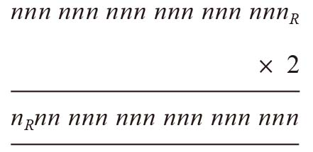
我们首先为nR选择一个值。它不能等于0，否则得数只有17位数，而且我们也无法写出这样的乘法算式。它也不能等于1，否则得数的首位数是1，而首位数是1的18位数的一半肯定是一个17位数。但是，它可能等于2。
如果nR等于2，算式就会变成
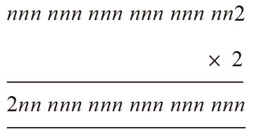
通过推断n的值，我们有可能完成上面这个等式。2×2 = 4，因此，上式最后一行数字的末位数肯定是4。
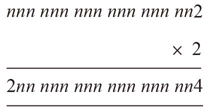
最后一行的数字与最上面一行的数字不仅有同样多的位数，而且除了上面数字的末位数变成下面数字的首位数以外，其他各个数字的先后次序也相同。因此，下面数字的末位数与上面数字倒数第二位数相同。由此可见，上面数字的倒数第二位数是4。
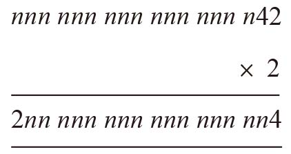
因为4×2 = 8，所以下面数字的倒数第二位数，以及上面数字的倒数第三位数，肯定都是8。
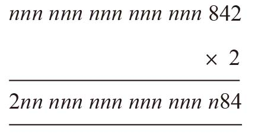
到目前为止，我们一直在做被乘数是2的乘法。接下来，8×2 = 16，因此下面数字的倒数第三位数和上面数字的倒数第四位数肯定都是6，但这个6仅仅是16的个位数，我们还需要写上一个1，表示进位。
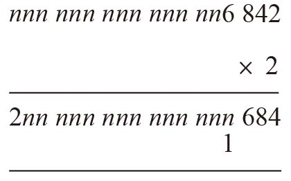
接着，我们确定下一个n的值。这一次不仅有6×2 = 12，还有一个进位的1，所以总和是13。因此，下面数字倒数第四位数与上面数字倒数第五位数是3，还要进1。
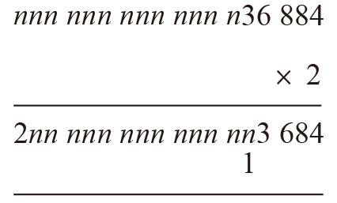
按照这个方法确定这两个数字，最终就会得到一个理想的结果：
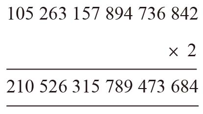
于是，我们找到了一个答案：105 263 157 894 736 842乘以2之后，末位数就会变成首位数，其余所有位数的先后次序保持不变。
如果末位数是3，最后的得数就是157 894 736 842 105 263。这个数乘以2之后，就会变成315 789 473 684 210 526。因此，157 894 736 842 105 263也是一个正确答案，其中加粗的部分与第一个正确答案中的某个部分正好相同。如果末位数是4、5、6、7、8或9，同样可以得出符合条件的数字。
9次幂
但愿你没有试图计算出这些9次幂的值。不过，如果你真的计算了，就应该看出其中的规律：任何数9次幂的末位数都与这个数的末位数相同。
因此，将这些数字按照由小到大的次序排列后，末尾几位数分别是：…0 671，…8 832，…1 953，…6 464，…1 875，…8 416，…5 077，…2 848，…8 759。
事实上，我们可以通过一张表来展现末位数随着指数升高而发生的变化。
从上表可以看出，任何数9次幂的末位数都与这个数的末位数相同，5次幂的末位数也具有同样的特点。
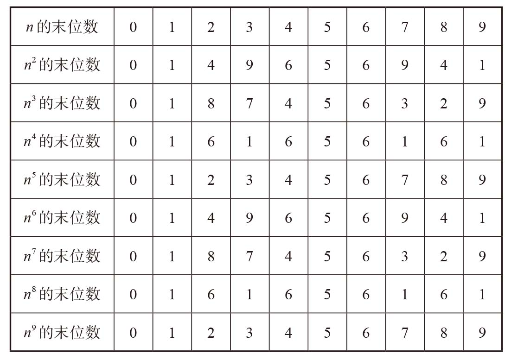
实际上，幂的末位数与原数的末位数相同是某些指数幂的共有特点，包括5次幂、9次幂、13次幂，以及递增为4的倍数的所有指数幂。
指数变成64后
264表示2自乘64次，也是下面这个两倍递增数列的第64项：
2，4，8，16，32，64，128，256，512，1 024…
这个数列看上去很熟悉吧，再写54项就到了264，但是写多了难免会出错。
因此，我们必须想一个办法，在不需要过多计算的前提下，估算出这个数。
等一等，数列的第十项210是1 024。
这个数约等于1 000，1 000是一个非常方便的约整数。
如果210约等于1 000，1 000自乘6次（即1 0006）就约等于210自乘6次，即(210)6 = 260。
1 0006 = 1 000 000 000 000 000 000
也就是说，260 ≈ 1018
我们知道24 = 16。
因此，264 = 260×24 ≈ 16×1018
能得出16×1018这个估算结果已经相当好了，但我们还可以通过调整取整误差，得出更精确的估算值。
我们把1 024估算成1 000，但1 024实际上比1 000大2.4%。每次乘以1 000时，还需要把这个2.4%补回来。因为我们让1 000自乘了6次，所以还需要增加6个2.4%，累计约为15%。因此，改进后的答案应该是16×1018×（1 + 15%）。
我们可以通过心算，计算出16×1018的15%是多少。16×1018的10%是16×1017，5%是它的一半，即8×1017，因此15%就等于24×1017。
最终，我们的估算结果是184×1017。
这个结果与真实值，即18 446 744 073 709 551 616，非常接近。
好多好多的0
数字末尾的0到底有什么含义呢？答案非常简单。末尾有一个0表示这个数可以被10整除，末尾有两个0表示它可以被100（即10×10）整除，末尾有3个0表示它可以被1 000（即10×10×10）整除。换言之，数字末尾的0表示这个数可以被10整除的次数。因此，本题实际上就等于问我们100！可以被10整除多少次。
我们知道：
100! = 100×99×98×97×…×3×2×1
我们把所有项都分析一遍，看看有多少项可以被10整除。
10、20、30、40、50、60、70、80、90和100都可以被10整除，也就是说，100！后面至少有11个0（100包含有两个0，因此需要统计两次）。
不过，这道题没这么简单。两个末位不是0的数也可以通过相乘的方式把末位变成0。例如：
8×5 = 40
4×15 = 60
6×25 = 150
那么，如何才能保证统计时不会遗漏那些末位不是0但是在相乘之后变成0的数呢？我们不妨分解这些数，看看有什么特点。
8×5 = (2×2×2)×5
整理后变为：
(2×2)×(2×5) = 4×10
同理：
4×15 = (2×2)×(3×5) = (2×3)×(2×5) = 6×10
6×25 = (3×2)×(5×5) = (3×5)×(2×5) = 15×10
如果两个数末位都不是0，但它们乘积的末位是0，那么它们的乘法分解因式中肯定有2和5。只要一连串的乘数中有2和5，我们就可以将它们组合到一起得到10。
因此，我们对问题进行重新表述：查找100！的乘法分解因式中2和5的组合个数。
实际上，我们还可以进一步简化这个问题。从本质上讲，我们就是要确定100！可以分解出多少个5。100！分解出来的2显然远多于5，因此2和5的组合个数就等于数字5的个数。
1~100的整数可以分解出多少个5呢？我们从1开始统计，下面这些数都可以分解出5：
5，10，15，20，25 … 90，95，100。
一共20项，其中25、50、75和100可以分解出2个5，其余各项分别可以分解出1个5。因此，100！可以分解出共24个5。
答案已经出来了：100！的末尾一共有24个0。
我把这个数全部写出来，大家可以数一数，看看是不是有24个0：93 326 215 443 944 152 681 699 238 856 266 700 490 715 968 264 381 621 468 592 963 895 217 599 993 229 915 608 941 463 976 156 518 286 253 697 920 827 223 758 251 185 210 916 864 000 000 000 000 000 000 000 000。